The grow() Method#
The grow() method is one of the basic methods for describing a process.
It is called on a mask data object. The basic use case is:
l1 = layer("1/0")
metal = mask(l1).grow(0.3)
output("1/0", metal)
This simple case deposits a material where the layer is drawn with a rectangular profile.
The grow() method has up to two arguments and a couple of options which
have to be put after the arguments in the usual Python keyword notation
name=value:
grow(height, lateral=0, option=value...)
The height argument is mandatory and specifies the thickness of the
layer grown. The lateral parameter specifies the lateral extension
(overgrow, diffusion). The lateral extension is optional and defaults
to 0. The lateral extension can be negative. In that case, the profile
will be aligned with the mask at the bottom. Otherwise it is aligned
at the top.
There are several options:
Option |
Value |
|---|---|
|
The profile mode. Can be
'round', 'square' and'octagon'. The default is ‘square’. |
|
The taper angle. This option specifies tapered mode and cannot
be combined with
'mode'. |
|
Adjusts the profile by shifting it to the interior of the
figure. Positive values will reduce the line width by twice
the value.
|
|
A material or an array of materials onto which the material
is deposited (selective grow). The default is
'all'. Thisoption cannot be combined with
"into". With "into","through" has the same effect than "on". |
|
Specifies a material or an array of materials that the new
material should consume instead of growing upwards. This
will make “grow” a “conversion” process like an implant step.
|
|
To be used together with “into”. Specifies a material or an
array of materials to be used for selecting grow. Grow will
happen starting on the interface of that material with air,
pass through the
through material (hence the name) andconsume and convert the
into material below. |
|
Applies the conversion of material at the given depth below
the mask level. This is intended to be used together with
into and allows modeling of deep implants. The value isthe depth below the surface.
|
mode, taper and bias#
The effect of the mode and bias interaction is best illustrated with
some examples.
The initial layout is always this in all following examples:
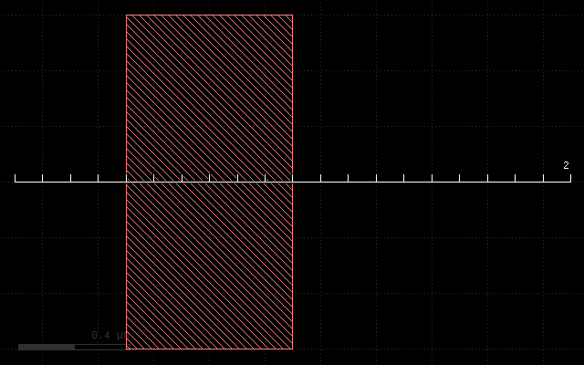
The first example if the effect of the plain grow with a thickness of 0.3 um. It will deposit a rectangular material profile at the mask:
grow(0.3)
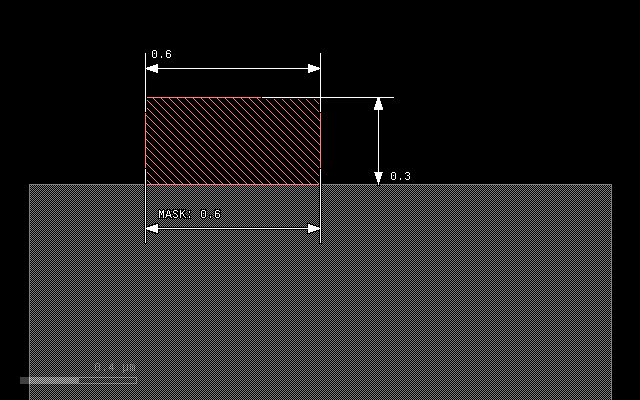
The next example illustrates the effect of a lateral extension on a square profile. The 0.1 um extension will add material left and right of the main patch:
grow(0.3, 0.1)
In 'round' mode, the material will be deposited with an elliptical
profile. The vertical axis will be 0.3 um, the horizontal 0.1 um
representing the laternal extension. The patch will become bigger than
the mask by the lateral extension at the bottom:
grow(0.3, 0.1, mode='round')
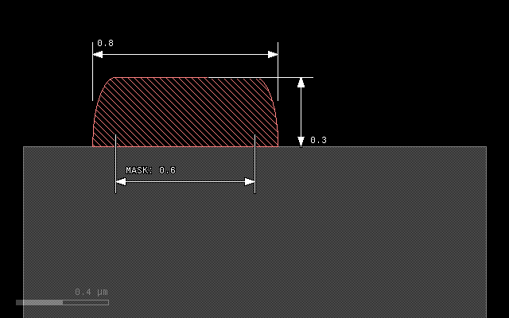
To avoid overgrow, a negative lateral extension can be specified, resulting in a alignment of patch and mask at the bottom:
grow(0.3, -0.1, mode='round')
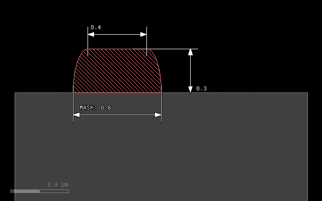
Another mode is 'octagon' which is basically a coarse approximation
of the ellipse and computationally less expensive:
grow(0.3, 0.1, mode='octagon')
A bias value can be specified to fine-tune the position of the bottom
edge of the patch. A positive bias value will shrink the figure:
grow(0.3, 0.1, mode='round', bias=0.05)
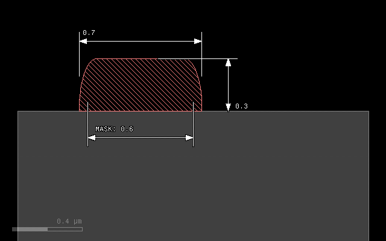
A special profile can be specified with the taper option. This option
specifies a taper angle and a conical patch will be created. The taper
angle will be the sidewall angle of the patch. This option cannot be
combined with mode and the lateral extension should be omitted. It can
be combined with bias however:
grow(0.3, taper=10)
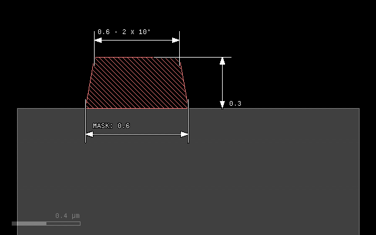
grow(0.3, taper=10, bias=-0.1)
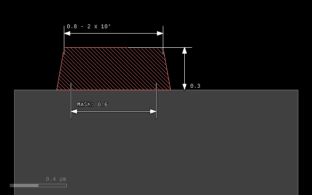
Step coverage#
The following image shows the step coverage of a 30° slope and a vertical step by a material deposited in round mode with thickness of 0.3 um and lateral extension of 0.1 um. The sidewall of the step will be covered with a thickness of 0.1 um corresponding to the lateral extension:
grow(0.3, 0.1, mode='round')
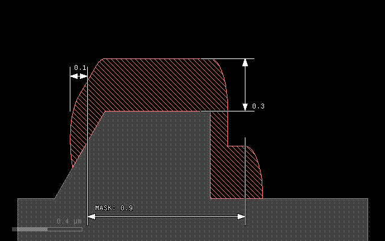
on - growing on specific material#
The on option allows to select growth on a material surface in
addition to selection by a mask. To do so, specify the array of
materials or the single material on which the new material will be
deposited. The surface of these substrate materials will form the seed
of the growth process.
An array of materials is written as a list of material data objects in square brackets.
# Prepare input layers
m1 = layer("1/0")
m2 = layer("2/0")
# Grow a stop layer
stop = mask(m2).grow(0.05)
# Grow with mask m1, but only where there is a substrate surface
metal = mask(m1).grow(0.3, 0.1, mode='round', on=bulk())
# output the material data to the target layout
output("0/0", bulk())
output("1/0", metal)
output("2/0", stop)
Here is the input data:
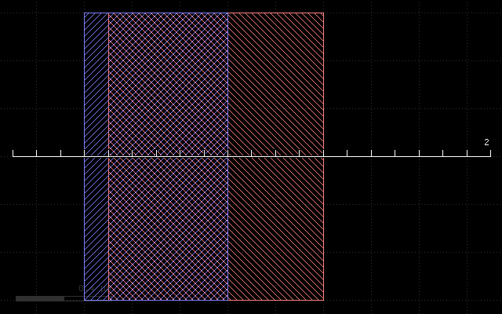
And this is the result:
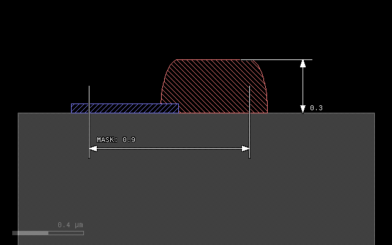
into - converting material#
With the into option it is possible to convert material below the
mask rather than growing upwards. into specifies a single material
or an array of materials in square brackets. In effect, the direction
is reversed and the material given by into is consumed and replaced
by the new material. Note: the etch operation is basically doing the
same, replacing the material by “air”.
# Prepare input layers
m1 = layer("1/0")
m2 = layer("2/0")
substrate = bulk()
# Grow with mask m1 into the substrate
metal = mask(m1).grow(0.3, 0.1, mode='round', into=substrate)
# output the material data to the target layout
output("0/0", substrate)
output("1/0", metal)
This script gives the following result:
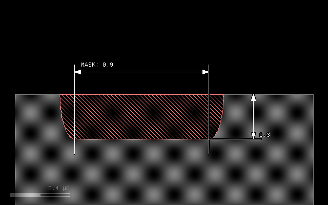
through - selective conversion#
The same way that on will make the grow selective on the chosen
materials, through will select seed materials for conversion with
into. Conversion will start at the interface between through and
air and consume the materials of into. It will not consume the
through materials:
# Prepare input layers
m1 = layer("1/0")
m2 = layer("2/0")
substrate = bulk()
stop = mask(m2).grow(0.05, into=substrate)
# Grow with mask m1 into the substrate
metal = mask(m1).grow(0.3, 0.1, mode='round', through=stop, into=substrate)
# output the material data to the target layout
output("0/0", substrate)
output("1/0", metal)
output("2/0", stop)
With the following input:
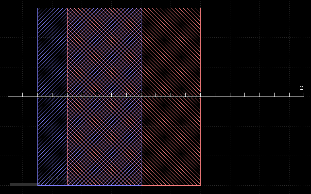
This script gives the following result:
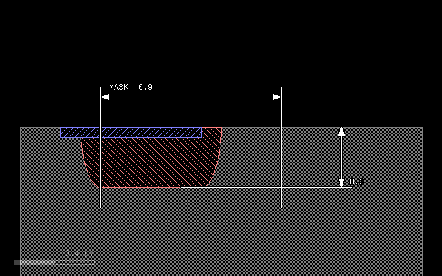
buried - applies a conversion in a region below the surface#
If buried parameter is given, the process is not applied on the
surface, but at the given depth below the surface. The main application
is to model deep implants. In that case, into can be given to specify
the material to convert and buried will specify the depth at which the
material is converted. The region of conversion extends below and above
that depth:
# Prepare input layers
m1 = layer("1/0")
m2 = layer("2/0")
substrate = bulk()
# Grow with mask m1 into the substrate
metal = mask(m1).grow(0.3, 0.1, mode='round', into=substrate, buried=0.4)
# output the material data to the target layout
output("0/0", substrate)
output("1/0", metal)
With the following input:
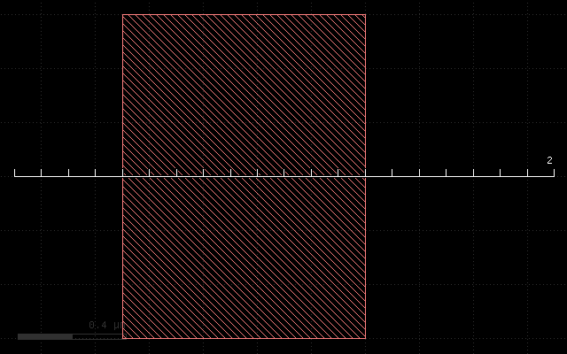
This script gives the following result:
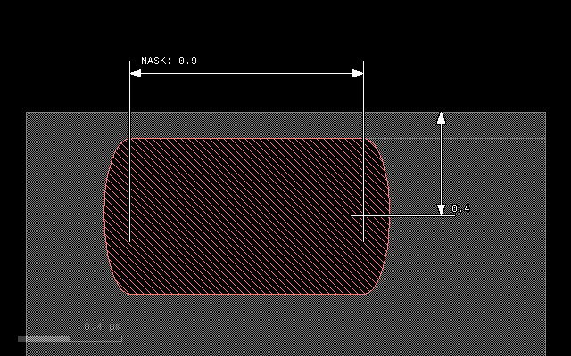